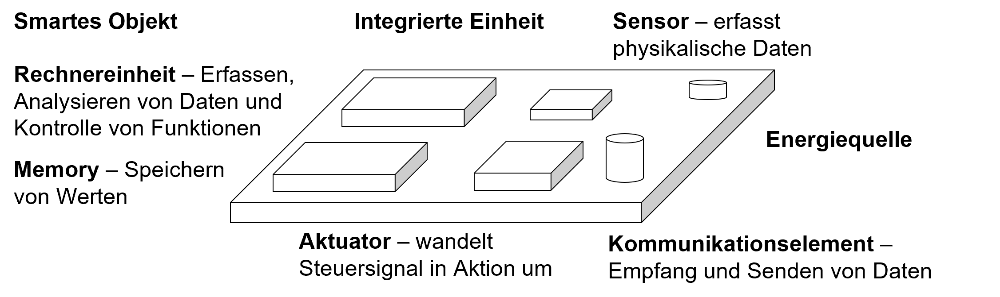
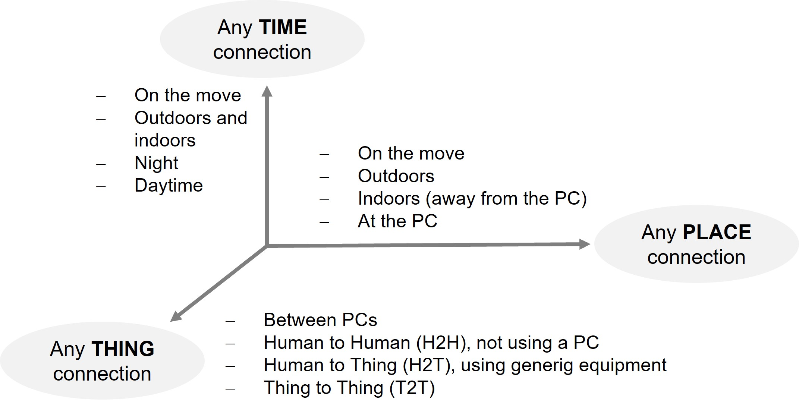
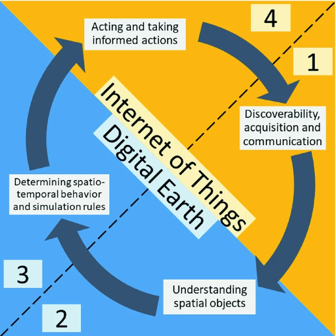
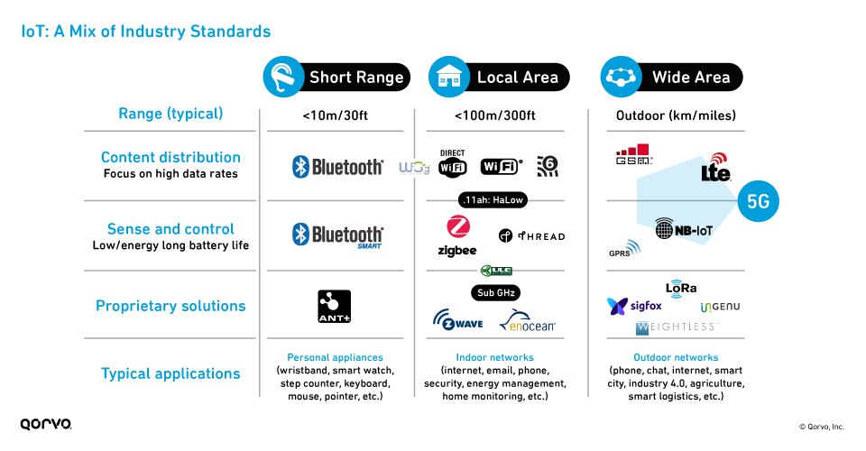
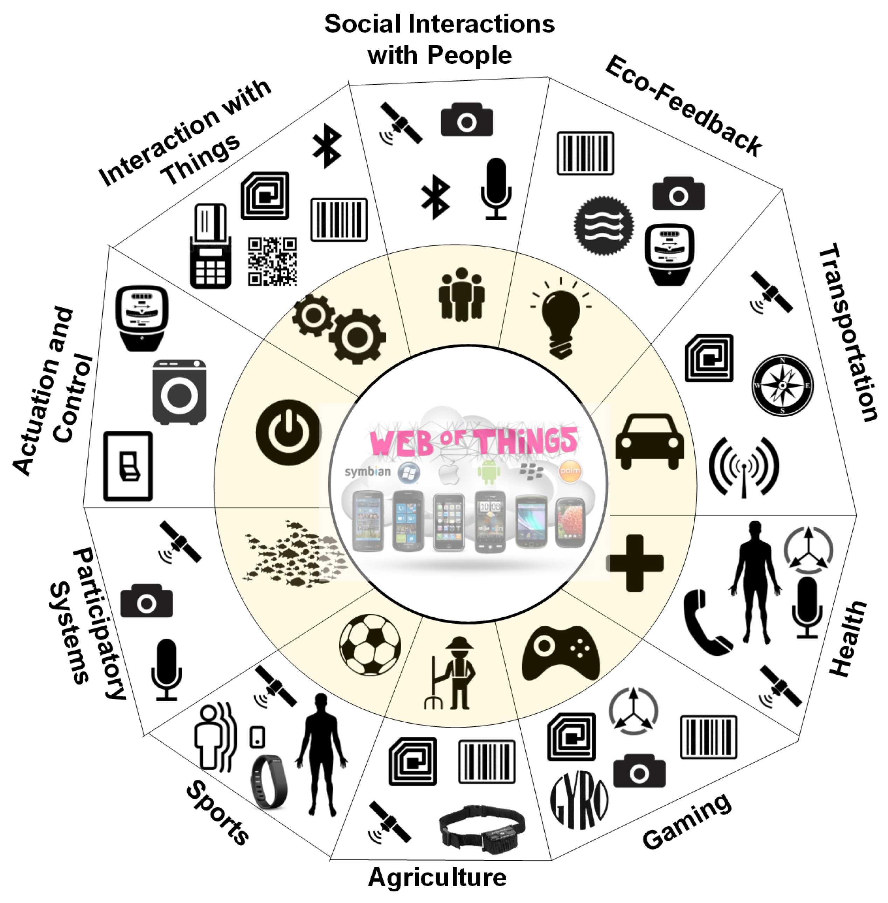

1 Internet of Things IoT
iot, ubiquitous computing, digital earth
Ubiquitous Computing
Aus dem Bestreben der 1980er Jahre, Technologie in den Hintergrund des Alltags einzubetten, in dem entstehenden Forschungsgebiet Ubiquitous Computing definierte dies Weiser Ubiquitous Computing (Rogers 2006) als “die physische Welt, die reichhaltig und unsichtbar mit Sensoren, Aktoren, Anzeigen und Computerelementen verwoben ist, die nahtlos in die alltäglichen Objekte unseres Lebens eingebettet und durch ein kontinuierliches Netzwerk verbunden ist” mit dem Ziel im täglichen Leben unterstützend zu sein und nicht zu überladen.
- Ubiquitous Computing
-
Vision der Informatik allgegenwärtige Datenverarbeitung und Nutzung von Systemen ohne Bedienungsanforderung und Hardwarebelastung für die Nutzenden. Ubiquitäre Systeme agieren quasi unsichtbar im Hintergrund von Handlungsfelder (Wiegerling 2013).
Ethnographische Studien über den Alltag zeigen, dass der Kontext des Alltags der Menschen viel subtiler, fliessender und eigenwilliger ist, als das die Theorien über den Kontext glauben machen (Salvador und Anderson 2003). Dies erschwert eine praktische Umsetzung und Vorhersage von Bedürfnissen auf Basis von Kontextinformationen erheblich. Zusätzlich stellen sich auch ethische und soziale Fragen. Rogers (2006) plädiert für einen proaktiven Ansatz weg von proactive Computing zu proactive people und propagiert eine fachspezifische Nutzung für bestimmte Bereiche wie beispielsweise Landwirtschaft oder Umeltsanierung und weg von der Idee von pervasive Computing. Zwei Technologien sind kritisch für diese Ansätze Cloud Computing und Internet of Things.
Internet of Things
Es existiert keine einheitliche Definition für Internet of Things IoT oder das Internet der Dinge. Es ist eine Bezeichnung oder Sammelbegriff für ein Netzwerk von physischen Objekten “Things”, die untereinander vernetzt sind, mit Sensoren, Software und unterschiedlichen Technologien ausgestattet sind, und somit einen direkten Datenaustausch ermöglichen. Dies reicht von Monitoringsystemen, über Wildtierbeobachtungen, Smart City Anwendungen bis in die Haushalte die mit IoT Geräten ausgestattet sind.
Der Standardisierungsausschuss der International Telecommunication Union (ITU) definiert IoT als eine
.. a global infrastructure for the information society, enabling advanced services by interconnecting (physical and virtual) Things based on existing and evolving interoperable information and communication technologies (ITU 2005).
Ashton (2009) beschrieb als früher Ideengeber zu Internets der Dinge im Kontext von Supply Chain Management folgendes:
.. Ideas and information are important, but things matter much more. Yet today’s information technology is so dependent on data originated by people that our computers know more about ideas than things. If we had computers that knew everything there was to know about things — using data they gathered without any help from us—we would be able to track and count everything, and greatly reduce waste, loss and cost. We would know when things needed replacing, repairing or recalling, and whether they were fresh or past their best. We need to empower computers with their own means of gathering information, so they can see, hear and smell the world for themselves, in all its random glory. RFID and sensor technology enable computers to observe, identify and understand the world—without the limitations of human-entered data. [..] The Internet of Things has the potential to change the world, just as the Internet did. Maybe even more so.
Die Kernidee von IoT ist, mit Computer Informationen, ohne menschliches zu tun zu erkennen. Wenn Dinge eigenständig Daten sammeln, diese nach Art, Messung, Messzeit und Messort geordnet werden, ermöglicht dies im Bereich der Geomatik spannende neue Ansätze, Analysen und Anwendungen. IoT ist ein multidisziplinäres Gebiet mit einem breiten Spektrum an Technologien, Protokollen, Anwendungszenarien und Disziplinen und bedingt Kenntnisse der elektronischen Komponenten, Kommunikationsprotokollen, Echtzeitdatenanalysen, und der Lokalisierung von Objekten und Geräten (Granell u. a. 2020).
Für das Konzept Ding oder Thing bestehen unterschiedliche Definitionen. Charakteristisch ist, begrenzte Ressourcen (beispielsweise geringe Rechenleistung), unzuverlässige Netwerkverbindung, geringe Kosten für Hardware und Datenübertragung, keine Stromversorgung dafür Batterienbetrieb und nicht im Office-Umfeld sondern im Feld. Aus Netzwerksicht kann es als Entität mit der Möglichkeit sich mit einem Netzwerk lokal oder dem Internet zu verbinden beschrieben werden. Aus ding-zentrierter Sicht sind die mit den Dingen verbundenen Dienste zentral. Dienste, die Datenmengen, die von intelligenten Objekten durch deren Interaktion mit der Umgebung erfasst werden, verwalten.

Das Internet entwickelt sich in ein Netzwerk,
- in welchem Objekte miteinander verbunden werden,
- Informationen aus der Umwelt gesammelt werden (Sensorik),
- mit der physischen Welt interagiert (Steuerung) werden und
- bestehende Standards für Dienste für den Transfer, Analyse, Anwendung und Kommunikation genutzt werden.
Die drei wesentlichen technologischen IoT Komponenten sind folglich:
- Hardware mit Sensoren, Aktoren und integrierter Kommunikationstechnologie
- Middleware bedarfsorientierte Speicher- und Datenverarbeitungswerkzeuge für die Datenanalyse
- Präsentation mit zugänglichen und nutzerfreundlichen Visualisierungs- und Interpretationswerkzeuge über unterschiedliche Plattformen und Anwendungen
Betrachtet man die Dimensionen von IoT fügt sich aus der Sicht der Kommunikationstechnologie das thing mit ein (ITU 2005). Aus Sicht der Geoinformation, sind diese drei Dimensionen sehr vertraut mit Zeit, Ort und Objekt dem thing.

IoT Geräte haben neben der wichtigsten Eigenschaft, dass sie mit dem Netzwerk/Internet kommunizieren können, folgende typischen Eigenschaften. Sie sind oft funkbasiert und oft batteriebetrieben. Sie lassen sich daher einfach installieren, jedoch muss im Betrieb dem Batteriebetrieb der Verbrauch berücksichtigt werden und nach Anforderung (Laufzeit vs häufige Updates) priorisiert werden1.
Digital Earth und IoT
Der Vizepräsident der USA AL Gore führte 1998 in seiner Rede das Konzept der digitalen Erde ein mit der Vision die realer Erde mit einer virtuellen Nachbildung zu erweitern, einem virtuellen Zwilling (Gore 1998).
I believe we need a “Digital Earth”. A multi-resolution, three-dimensional representation of the planet into which we can embed vast quantities of geo-referenced data. Gore (1998)
Die Umsetzung der Vision “Digital Earth” erfordert wie auch die IoT eine entsprechende Infrastruktur, die das Auffinden, den Zugriff, die Analyse und die Verarbeitung von raumbezogenen Daten ermöglicht. Granell u. a. (2020) fordern eine permanente und verstärkte Zusammenarbeit beider Bereiche. Betrachtet man die Rolle der Netzwerke und Interaktion in beiden Bereichen, kann ein Worklow von (1) der Auffindbarkeit, Erfassung und Kommunikation räumlicher Informationen, zu (2) Verständnis räumlicher Objekte und ihrer Beziehungen, dann (3) Bestimmung des raum-zeitlichen Verhaltens und der Simulationsregeln und dem (4) Handeln und Ergreifen fundierter Maßnahmen gezeichnet werden. Bei (1) kann IoT mit neuen Quellen und höheren Aufnahme- und Übertragungsfrequenzen den Workflow anreichern und (2) erfordert eine kontinuierliche vertiefte Zusammenarbeit beider Infrastrukturen. Im Bereich IoT werden räumlichen Analysen wird aufgrund der aufkommenden Edge-Fog-Cloud Paradigmen zunehmen.

Die Auffindbarkeit, Erfassung und Kommunikation räumlicher Informationen erfordert das Geräte und ihre Daten auffindbar und zugänglich sind mit standardisierten Methoden in globalen zentralisierten Sammlungen, oder über dezentralen oder hierarchischen Ansätzen. Viele dieser Dienste erfordern Fachkenntnisse und einfache Zugänge zu IoT Daten fehlen. Der OGC Standard Sensor Web Enablement SWE standardisiert die Erkennung und der Zugriff auf Sensoren. Bei der räumlichen Datenerfassung in IoT haben Sensor-Metadaten eine hohe Bedeutung, wobei der SensorML-Standard einer der wichtigsten ist (Granell u. a. 2020).
- Sensor Model Language SensorML-Standard
- Der OGC SensorML-Standard beschreibt umfassend Sensor-Metadaten und bietet eine Schnittstelle, die das Auffinden von Sensoren und Beobachtungen folglich das Erstellen von Suchindizes erleichtert. Elemente sind Betreiber, Dienste, Standort, beobachtetes Phänomen und der zeitliche Verlauf.
- Sensor Web Enablement SWE standards suite
- Der OGC SWE Standard ermöglicht die Erkennung und den Zugriff auf Sensoren und zugehörige Beobachtungsdaten über Standardprotokolle und Anwendungsprogrammierschnittstellen. Anwendung in der Erdbeobachtung, beispielsweise für das Katastrophenmanagement wie Brände, Überschwemmungen oder Vulkanausbrüche. Wobei die Unterstützung der Semantik eine Schwäche des Standards ist, Semantic Sensor Network SSN und Weiterentwicklungen wie Internet of Things Ontology IoT-O oder die Sensor, Observation, Sample, and Actuator (SOSA) Ontology, eine Zusammenarbeit zwischen W3C und OGC, nutzen Ontologien um die Semantik in IoT besser abzubilden.
SWE umfasst zwei Suchtypen das Auffinden einzelner Sensorinstanzen und Sensordienste, wobei ersteres sich auf einzelne Geräte oder Sensornetzwerke bezieht und das Zweite die Dienste, die mit dem Sensor interagieren. Die Suche kann grob in drei Gruppen unterteilt werden:
- thematisch: Art der Phänomene, die ein Sensor beobachtet, z. B. Temperatur, Windstärke oder Luftdruck
- räumlich: Ort, an dem der Sensor eingesetzt wird
- zeitlich: Zeitraum, in dem die Beobachtungen gemacht werden
Weiterentwicklungen im Bereich der Kommunikation zwischen things Geräten brachte neue Schnittstellen und über die Zeit geringere Kosten und Stromverbrauch der Kommunikationsschnittstellen wie Bluetooth, Wi-Fi, ZigBee, 3G-5G oder LORA. Während früher einfache Datenlogger nur Daten senden konnten verfügen die Geräte heute über die Möglichkeit Daten zu Senden und zu empfangen. Dies erlaubt die Steuerung und Anpassung des Verhaltens der Geräte. Kommunikationsprotokolle die auf Maschinenkommunikation ausgerichtet sind machine-to-machine M2M wurden entwickelt, wie das Advanced Message Queuing Protokoll (AMQP), MQTT oder das streamingorientierte Protokoll STOMP. Folgende Übersicht zeigt unterschiedliche Eigenschaften von Industriestandards für IoT über die Übertragungsdistanz, Art der Informationsübertragung und typische Anwendungsbereiche.

IoT und GIS
Smarte Geräte der erzeugen grosse Datenströme mit zeitlichen und räumlichen Merkmalen, für deren Analyse die Entfernung, Fläche, Volumen oder Trajektorien entscheidend für die Datenanalyse von IoT Geräten sind. Die Vielfalt der Geräte bringt neue analytische Herausforderungen mit sich, die in der Lage sein müssen räumlich-zeitliche Echtzeitdaten mit sehr heterogenen smarten Geräten verarbeiten zu können (Trilles u. a. 2017). Während Werkzeuge für die Analyse von Echtzeitdaten existieren, stellt die räumliche Komponente eine Herausforderung dar. Der Raum, wie der Standort, die Ausrichtung, Form und Grösse spielen eine wesentliche Rolle in IoT, da alle Geräte räumliche Eigenschaften aufweisen und miteinander räumlich zu einander in Beziehung stehen (beispielsweise der Standort, die Grösse und Orientierung von einem Auto und einem Fahrrad auf der gleichen Fahrbahn) (Granell u. a. 2020). Erst über den Raum können Sensoren in Beziehung zu einander gebracht werden.
Ansätze zur räumlichen-zeitlichen Datenanalyse in Echtzeit haben noch keine standardisierten Prozeduren, die einfach und breit angewandt werden können (Granell u. a. 2020). Zusätzlich sollten Standards Echtzeitanalysen ermöglichen ohne grossen zusätzlichen Rechenaufwand für Geräte, die eine beschränkte Speicherkapazität und Konnektivität haben und oft mit Batterie betrieben sind. Der OGC Sensor Observation Service SOS bedingt eine eher rechenintensive Verarbeitung von XML-Dokumenten und weitere Ansätze sind in Erarbeitung, die dem Rechnung tragen.
Kamilaris und Ostermann (2018) klassieren und geben eine Übersicht von IoT Anwendungen und Forschungsprojekte im Kontext der GIScience und IoT. Die Anwendungsbiete sind vielfältig, wie in folgender Abbildung illustriert. In fast allen aufgeführten Anwendungsgebieten sind Aussagen zum Standort relevant.

Sie führen für die verschiedenen Anwendungsgebiete die benutzten Methodenklassen der räumlichen Analyse.
Wobei sie die Analysemethoden wie folgt gruppieren:
- Geometric Measures: distances and proximity of points, adjacency and connectivity
- Data Mining: discovering patterns from large datasets
- Basic Analytical Operations: methods such as buffering and overlay
- Basic Analytical Methods: spatial analysis of point patterns and clusters, kernels and density analysis
- Network Analysis: graph measures, least-cost shortest path problems and flow modeling
- Surface Analysis & Geostatistics: Analysis of surfaces and geostatistics deal with interpolation of surfaces and kriging.
Sie klassieren die Anwendungsgebiete und die räumlichen Analysemethoden in folgender Tabelle.
| IoT Area | Geometric Measures | Data Mining | Basic Analytical Operations | Basic Analytical Methods | Network Analysis | Surface Analysis & Geostatistics |
|---|---|---|---|---|---|---|
| Tourism | X | X | - | X | - | - |
| Utility Network | X | X | - | - | X | - |
| Disaster Monitoring | X | - | X | - | - | X |
| Health and disease detection | X | X | - | X | - | X |
| Transportation | X | X | - | X | X | - |
| Logistics and assets | - | X | - | - | X | - |
| Wildlife monitoring | - | X | - | X | X | X |
| Agriculture | X | - | - | X | X | X |
| Crime prediction | - | - | - | X | - | - |
| Sports and gaming | X | - | - | X | - | - |
| Environment | - | - | X | X | X | X |
In einer zweiten tabellarischen Zusammenfassung führen sie IoT basierte Methoden mit Beispielen von Generalisierung von Punktmessungen auf, welche Aussagen in grösseren Massstäben ermöglichen. Diese sind nach einzelnen IoT Methoden klassiert, wobei die ersten vier Methoden gerade für Generalisierung am beliebtesten sind.
| IoT-Based Method | Examples of Generalizations |
|---|---|
| Participatory sensing | Detecting emergency events at city scale [1], promoting neighborhood identity and local services [2], creating a noise map of a city [3], detecting outbreaks of dengue fever [4], developing heat maps from cyclists used for better city planning [5], producing a global spatial distribution of malaria risk [6]. |
| Vehicular networks and transportation systems | Proactively performing urban traffic monitoring [7], travel planning based on real-time traffic information [8]. |
| Fixed IoT sensors | Urban decision-making assistance [9], wildlife monitoring and understanding of herd behavior [10], monitoring the area levels of air pollution [11], creating air temperature and precipitation maps [12], understanding fish-school characteristics around artificial reefs [13], estimating the level variations of the sand layer of sandy beaches or dunes [14]. |
| Satellite imagery | Understanding how invasive species respond to landscape configuration relative to native species [15], assessing how the livestock agriculture affects the physical environment [16,17], modeling forest fire risk zones [18], earthquake risk assessment [19], planning of tsunami evacuation [20], creating digital maps with information about bacteria habitats [21], delineating groundwater potential zones in hard rock terrain [22]. |
| Ground sensor sampling | Estimating the Grand Canyon height map [23], generating high-risk floodplain maps [24], creating soil fertility maps [25], assessing the spatial variation of groundwater quality and producing salinity hazard maps [26], assessing the heavy metal pollution in soils [27], estimating the zinc contamination concentrations around a lake [28]. |
| Web-based IoT datasets | Estimating traffic from historical traffic flows [29], optimizing routes of public transportation based on taxi rides [30], exploring and analyzing attractive areas [31], associating assault rates to measures of population and place characteristics [32]. |
| Combination of IoT methods | Assessing damage in Haiti by earthquake and facilitating emergency response [33], infrastructure asset management [34]. |
Der Raspberry Pi ist insofern mit dem verhältnissmässigen hohen Stromverbrauch kein typisches IoT Device↩︎